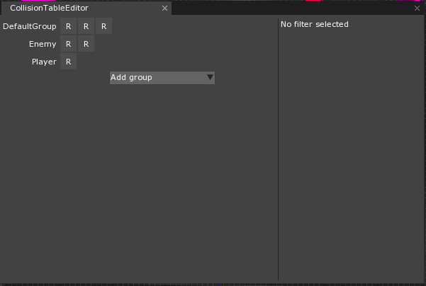
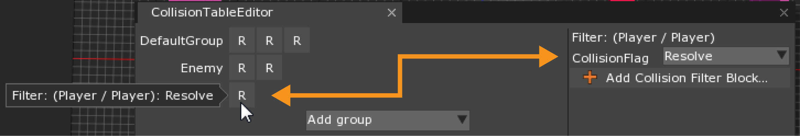
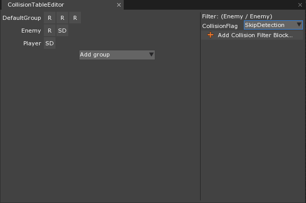
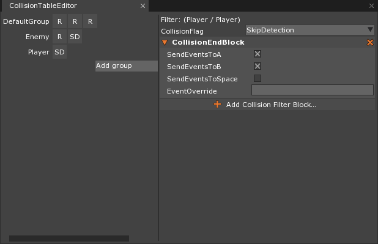

CollisionGroup and CollisionTable
CollisionGroup is a resource used to group together Colliders. Once a new group is created, the user can assign a Collider to that group by setting the Collider’s CollisionGroup property. CollisionGroups are inextricably tied to CollisionTables –interactions of groups are governed by the table. Finally, the CollisionTable is made up of CollisionFilters that allow the user to set each group-to-group’s CollisionFilter to resolve, skip resolution, or skip detection.
Common Uses
- Creating separate CollisionGroups for player(s), enemies, bullets, and anything else in a game where the user will some things to collide with only certain things and not all.
- Creating separate CollisionGroups for different sets of players in a multi-player game, along with certain regions or volumes that only react to certain player “teams”.
- Creating separate CollisionGroups for any scenario in which the user find themselves in need of differentiating which objects may or may not collide with other objects.
Using CollisionGroup and CollisionTable Resource
This section will take a look at a basic player/enemy shooter game in which one would want the player’s bullets to collide with the enemy, but not other players or player-friendly objects and vice versa with the enemies’ bullets.
To demonstrate the CollisionGroup and CollisionTable Resources, a simple top-down shooter demonstration will be used, as seen below:

The objects whose Colliders will belong to new, user-created CollisionGroups fall into two groups:
- The player-controlled object (the blue and white rotating sphere), the three player-friendly objects (the light blue spheres), and the bullets shot from these objects
- The five enemy objects (the red squares) and the bullets shot from these objects
Two different CollisionGroups are required for the demonstration: Player and Enemy. Once they are created, a CollisionTable resource is needed to define the behavior between these groups. Below is a picture of a user-created CollisionTable after the creation of the two user-defined CollisionGroups:

As can be seen, there are three CollisionGroup Resources listed on successive rows:
DefaultGroupis the CollisionGroup that all Colliders are assigned by default.Enemyis a user-made CollisionGroup that will group together all enemy objects and the bullets shot by those objectsPlayeris a user-made CollisionGroup that will group together the player and friendly-to-the-player objects as well as the bullets shot by those objects
To change which collisions should resolve and which should not, each CollisionFilter (i.e., the elements that make up the table) has a property named CollisionFlag.
The CollisionFlag property may be set to one of three values: Resolve, SkipDetection, or SkipResolution. The table above shows that each CollisionFilter has its CollisionFlag property set to Resolve (signified on the table itself by the letter “R”). To understand how collision resolution between CollisionGroups may be changed, a closer look at CollisionFilter is required.
CollisionFilter and CollisionFlag
The following picture shows the CollisionFilter belonging to the objects belonging to the Player CollisionGroup colliding with others of the same group:

The orange arrow has been added to indicate the CollisionFlag property. By hovering over a particular CollisionFilter, a window appears explicitly stating the CollisionGroup(s) that are being filtered (Player and Player in this case) as well as the current value of the filter’s CollisionFlag property (currently set to Resolve).
To change this (Player / Player) filter to reflect demonstration above, one must change the CollisionFlag to SkipDetection. The following animation illustrates the entire process from selecting the CollisionFilter to changing the value of the CollisionFlag:

The finalized CollisionTable used in the demonstration is shown here:

Ignoring the DefaultGroup for a moment, the only type of collision that will be resolved is between objects in the Player and Enemy groups. This is why the movable player object can pass straight through the player-friendly objects and not be affected by any bullets shot by them.
The DefaultGroup can still be very useful for non-gameplay essential elements. In the game above, the walls surrounding the player and enemies have Collider components belonging to the DefaultGroup ColllisionGroup. Since the CollisionTable has both Player and Enemy CollisionGroups resolving collision when they collide with an object belonging to the DefaultGroup CollisionGroup, both types of bullets collide upon impact with the wall.
Collision Filter Blocks
Collision Filter Blocks are sub-components that may be added to a CollisionFilter to control the GroupCollisionEvents sent by that particular type of collision. To add one to a particular CollisionFilter, simply select a filter and directly below the CollisionFlag property, click on the + Add Collision Filter Block bar. The following screenshot shows a CollisionEndBlock sub-component added to the (Player / Player) CollisionFilter:

The types of Collision Filter Blocks available to add to CollisionFilters are as follows:
CollisionStartBlock- CollisionStartBlock is used for changing whom among the two CollisionGroups in the CollisionFilter receives GroupCollisionStarted CollisionEvents
CollisionPersistedBlock- CollisionPersistedBlock is used for changing whom among the two CollisionGroups in the Collision filter receives GroupCollisionPersisted CollisionEvents
CollisionEndBlock- CollisionEndBlock is used for changing whom among the two CollisionGroups in the CollisionFilter receives GroupCollisionEnded CollisionEvents
PreSolveBlock- PreSolveBlock is used for changing whom among the two CollisionGroups in the CollisionFilter receives GroupCollisionPreSolve CollisionEvents
All of the Collision Filter Blocks share the same In-Editor properties. The property names use the letters “A” and “B” to refer to the two CollisionGroups present in any given CollisionFilter where “A” refers to the first and “B” the second. The properties and their descriptions are as follows:
SendsEventsToA :Boolean- When set to true sends the GroupCollisionEvent to the A object of the CollsionFilter selected
SendsEventsToB :Boolean- When set to true sends the GroupCollisionEvent to the B object of the CollisionFilter selected
SendsEventsToSpace :Boolean- When set to true sends the GroupCollisionEvent to the Space where the CollisionTable is in use
EventOverride :String- A String that will rename this Collision Filter Block’s GroupCollisionEvent. Note: If you use this feature and wish to adhere to the current custom event naming conventions (i.e., the event name is accessible through the Events.xxxx syntax), create a new ZilchScript that resembles the following template:
[Static]
class NewEventTypeName
{
sends EventOverrideName : CollisionGroupEvent;
}
Updating the Physics Space
To apply all of the changes made in a new CollisionTable, the CollisionTable property in the PhysicsSpace must be set to the user-created table. If this is not changed, the default CollisionTable (in which only the DefaultGroup exists) will be used.